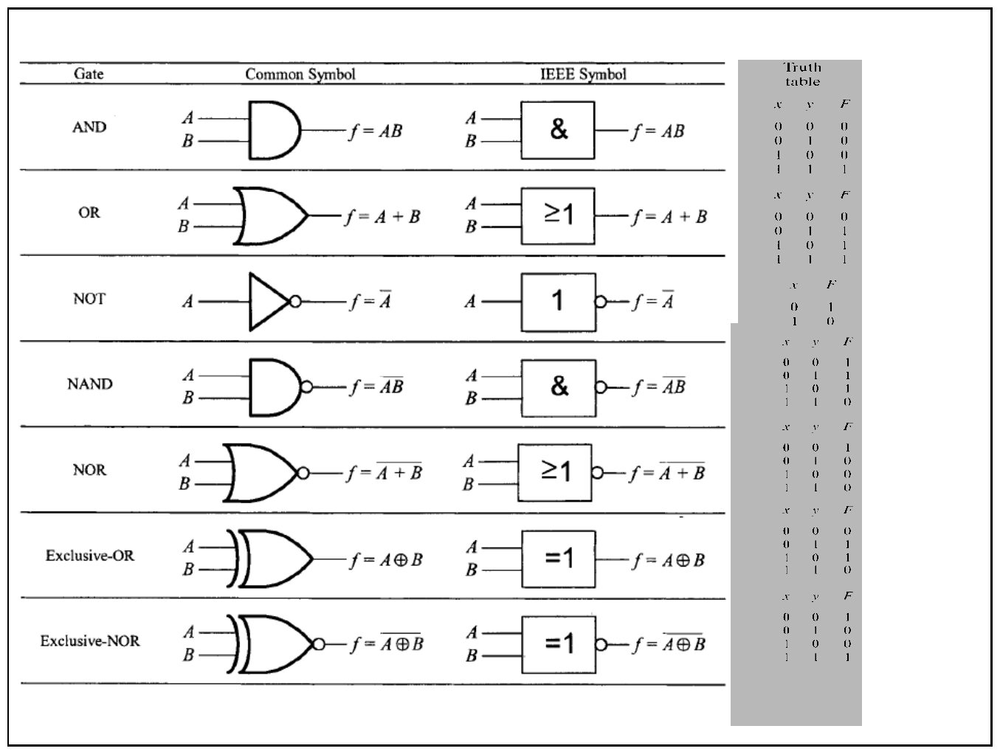
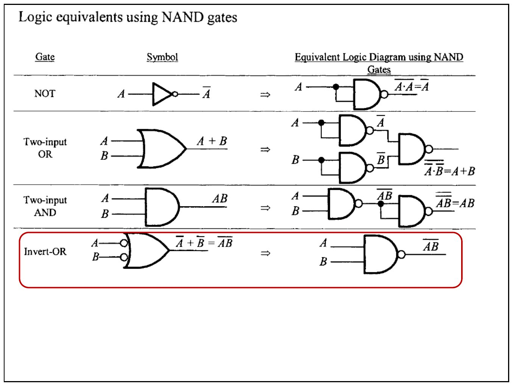
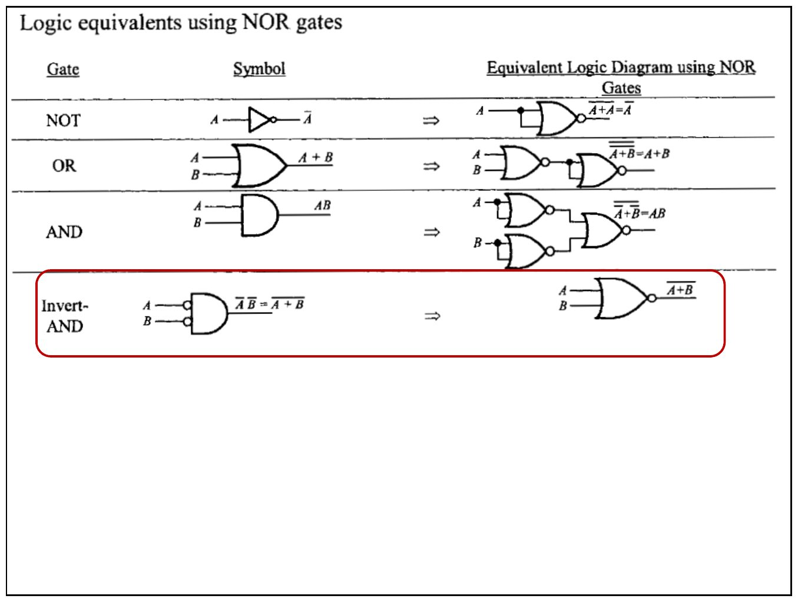
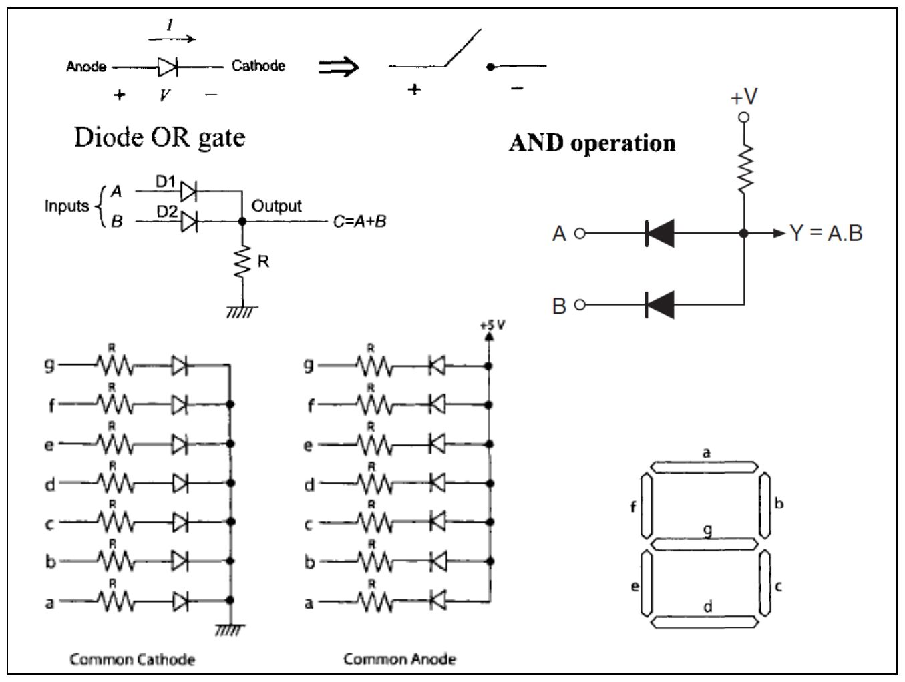
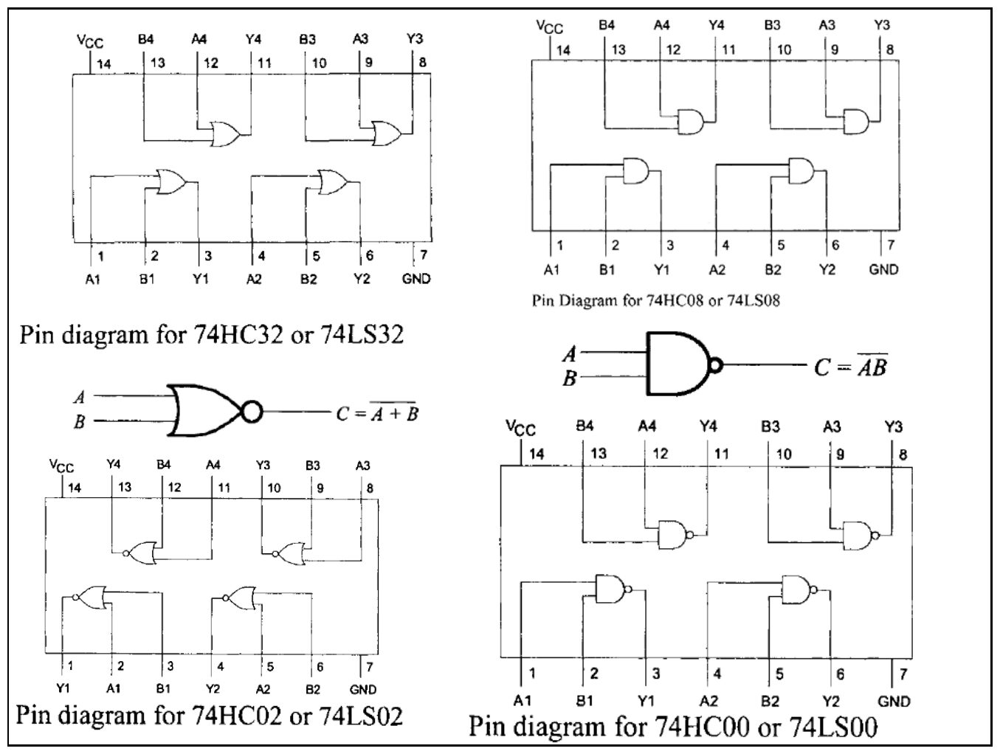
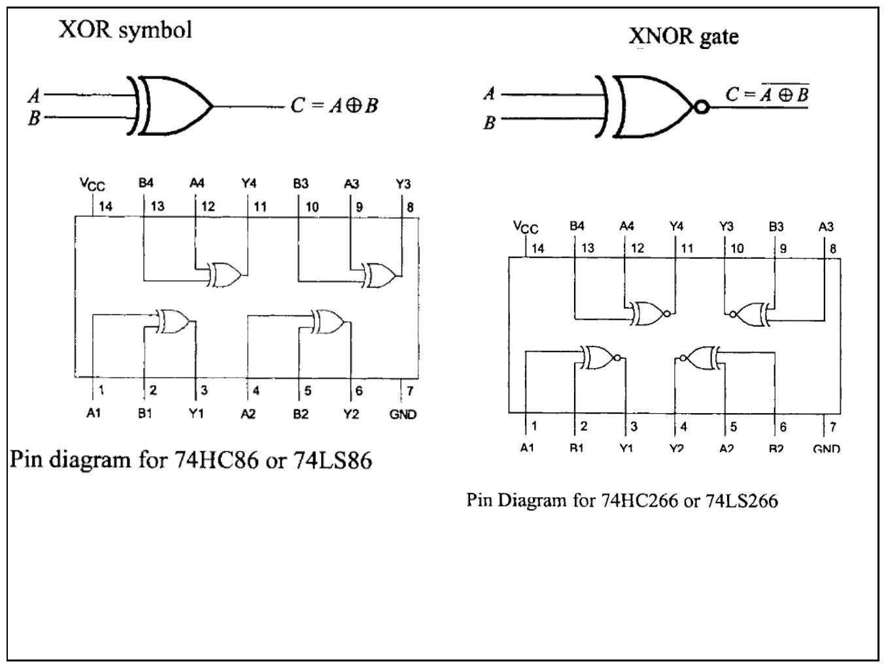
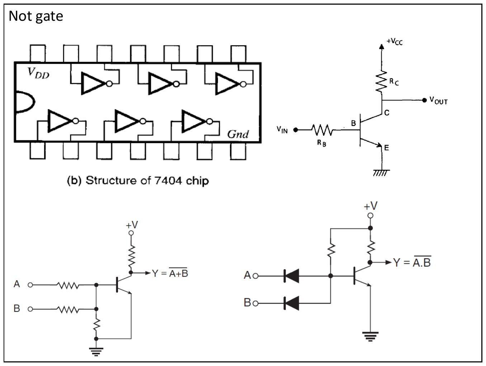
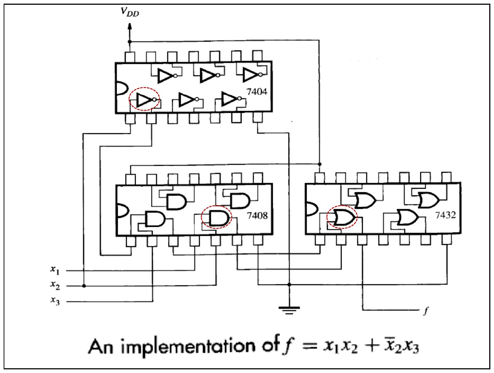
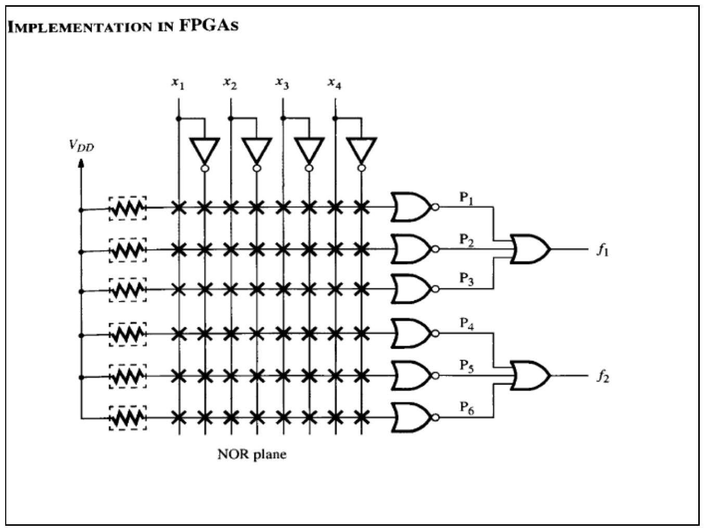

· EEM211
EEM211 Sayısal Mantık Tasarımı: Mantık Kapıları ve Tümdevreler (Sunu 1)
EEM211 – Sayısal Mantık Tasarımı · 17.10.2012 · 16.10.2026
Bu yazı, Başkent Üniversitesi EEM211 Sayısal Mantık Tasarımı dersinin 17 Ekim 2012 tarihli 1. sunusudur; PDF'in yazar bilgisinde dersin hocası Hamit Erdem'in adı (hamit) geçiyor. Sunu dokuz slayttan oluşuyor ve neredeyse tamamı şekil: temel mantık kapıları, NAND/NOR eşdeğerleri, kapıların diyot ve transistörlerle yapılışı ve laboratuvarda kullanılan 74xx tümdevrelerinin bacak bağlantıları. Şekillerin içerdiği bilgiler aşağıda metin olarak da verildi. Sununun orijinal PDF'i yazının sonunda indirilebilir.
Temel mantık kapıları
İlk slayt yedi temel kapıyı, ortak (common) sembolü ve IEEE sembolüyle yan yana gösteriyor. IEEE sembolünde kapının işlevi kutunun içindeki işaretle anlatılır: AND için &, OR için ≥1, NOT için 1, XOR için =1; çıkıştaki küçük daire tersleme (değil) anlamına gelir.

| Kapı | Çıkış | IEEE işareti |
|---|---|---|
| AND | f = A·B | & |
| OR | f = A + B | ≥1 |
| NOT | f = A' | 1 (çıkışta daire) |
| NAND | f = (A·B)' | & (çıkışta daire) |
| NOR | f = (A + B)' | ≥1 (çıkışta daire) |
| Exclusive-OR (XOR) | f = A ⊕ B | =1 |
| Exclusive-NOR (XNOR) | f = (A ⊕ B)' | =1 (çıkışta daire) |
Slaytın sağındaki doğruluk tabloları:
| x | y | AND | OR | NAND | NOR | XOR | XNOR |
|---|---|---|---|---|---|---|---|
| 0 | 0 | 0 | 0 | 1 | 1 | 0 | 1 |
| 0 | 1 | 0 | 1 | 1 | 0 | 1 | 0 |
| 1 | 0 | 0 | 1 | 1 | 0 | 1 | 0 |
| 1 | 1 | 1 | 1 | 0 | 0 | 0 | 1 |
NOT kapısı için: x = 0 ise F = 1, x = 1 ise F = 0.
Yalnız NAND kapılarıyla mantık eşdeğerleri
NAND kapısı "evrensel" kapıdır: diğer bütün kapılar yalnız NAND ile kurulabilir.

- NOT: NAND'ın iki girişi birleştirilir: (A·A)' = A'
- İki girişli OR: Her giriş bir NAND ile terslenir, sonra bir NAND'dan geçirilir: (A'·B')' = A + B
- İki girişli AND: NAND çıkışı ikinci bir NAND ile terslenir: ((A·B)')' = A·B
- Invert-OR: Girişleri terslenmiş OR kapısı, NAND kapısının ta kendisidir: A' + B' = (A·B)'
Yalnız NOR kapılarıyla mantık eşdeğerleri

- NOT: NOR'un iki girişi birleştirilir: (A + A)' = A'
- OR: NOR çıkışı ikinci bir NOR ile terslenir: ((A + B)')' = A + B
- AND: Her giriş bir NOR ile terslenir, sonra bir NOR'dan geçirilir: (A' + B')' = A·B
- Invert-AND: Girişleri terslenmiş AND kapısı, NOR kapısının ta kendisidir: A'·B' = (A + B)'
Diyotlu kapılar ve 7 parçalı gösterge

- Diyot, anottan katoda doğru iletimdeyken kapalı bir anahtar gibi düşünülebilir.
- Diyotlu OR kapısı: A ve B girişleri D1 ve D2 diyotları üzerinden ortak çıkışa bağlanır, çıkış R direnciyle toprağa çekilir: C = A + B.
- Diyotlu AND işlemi: Çıkış bir dirençle +V'ye çekilir, A ve B girişleri ters yönlü diyotlarla çıkışa bağlanır: Y = A·B.
- 7 parçalı gösterge: a–g parçalarının her biri bir LED'dir. Ortak katot tipinde LED'lerin katotları toprağa, ortak anot tipinde anotları +5 V'a bağlıdır; her parça bir R direnci üzerinden sürülür.
74xx tümdevrelerinin bacak bağlantıları
Laboratuvarda kullanılan 14 bacaklı TTL/CMOS tümdevrelerinde her kılıfta dört adet iki girişli kapı vardır; 14. bacak VCC, 7. bacak GND'dir.

| Tümdevre | Kapı |
|---|---|
| 74HC32 / 74LS32 | 4 adet iki girişli OR |
| 74HC08 / 74LS08 | 4 adet iki girişli AND |
| 74HC02 / 74LS02 | 4 adet iki girişli NOR, C = (A + B)' |
| 74HC00 / 74LS00 | 4 adet iki girişli NAND, C = (A·B)' |

- XOR sembolü: C = A ⊕ B; tümdevresi 74HC86 / 74LS86.
- XNOR kapısı: C = (A ⊕ B)'; tümdevresi 74HC266 / 74LS266.
NOT kapısı ve transistörlü kapılar

- 7404: Bir kılıfta altı adet NOT (tersleyici) kapısı vardır.
- Tek transistörlü tersleyici: giriş V_IN, R_B üzerinden tabana uygulanır; çıkış kollektörden (R_C üzerinden VCC'ye çekili) alınır.
- İki girişin dirençlerle aynı transistörün tabanına bağlandığı devre NOR işlevi verir: Y = (A + B)'.
- Diyotlu AND girişinin ardından transistörlü tersleyici kullanılan devre NAND işlevi verir: Y = (A·B)'.
Bir fonksiyonun tümdevrelerle gerçekleştirilmesi

f = x1·x2 + x2'·x3 fonksiyonu üç tümdevreyle kurulur:
- 7404 (NOT): x2'yi üretir.
- 7408 (AND): x1·x2 ve x2'·x3 çarpımlarını üretir.
- 7432 (OR): iki çarpımı toplayarak f çıkışını verir.
Programlanabilir mantıkta gerçekleştirme

Son slayt ("Implementation in FPGAs"), x1–x4 girişlerinin ve tümleyenlerinin programlanabilir bir NOR düzlemine bağlandığını gösteriyor. Düzlemde P1–P6 terimleri üretiliyor; P1–P3 bir kapıda birleşerek f1, P4–P6 bir başka kapıda birleşerek f2 çıkışını oluşturuyor.